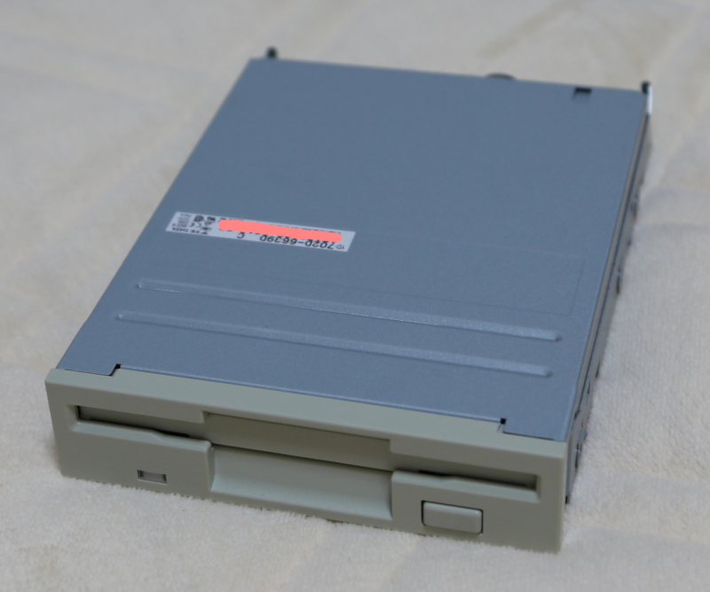

FS-A1GTのFDD換装 (2020年2月1日現在)
★お約束
ハードウェアの改造は、ちょっとしたミス一つでそのハードウェアを破壊してしまう恐れを伴います。
この記事に記載の部品のリビジョンが代わると、この記事の内容がマッチしない可能性もあります。
マッチしない部品を使用してこの記事を再現した場合に、ハードを破壊する可能性があります。
そういったリスクを理解した上でご覧ください。
記載の情報の保証は出来ませんので、記載情報の利用によって、万が一何かしらの不利益・不具合が生じても、当方は一切責任を負いません。
MSXturboR FS-A1GT の FDDは、ベルトドライブになっています。
これは、ゴムベルトによってディスクを回転させるドライブなのですが、ゴムなので使っていても使わないでいても数年程度で経年劣化で使えなくなってしまいます。
このゴムを定期的に交換するという修理方法もありますが、2020年現在、すでにフロッピーディスクドライブは過去のデバイスになっており、
このゴムベルト自体の入手が困難になってきています。
FDD には、ゴムベルトを使わないベルトレスドライブが存在しているので、そのベルトレスドライブへ交換する改造を行うことで、このゴムベルトの定期交換
の手間から解放されよう、というのが本記事の目的となります。
しかしながら、メリットだけではありません。次のデメリットがあることにご注意ください。
デメリット:
(1) アクセス速度が少し遅くなる
(2) ドライブの稼働音が大きくなる
(3) ドライブの埃避けが無くなる
また、ベルトレスドライブにしても、モーターや磁気ヘッドのメンテなどは必要なので、メンテナンスレスになる訳ではありませんので、ご注意ください。
基本的に WindowsPC用の FDD を流用するわけですが、すべてのドライブが利用できるわけではありません。
私が利用したのは Y-E DATA製の YD-702D-6639D というドライブになります。
amazon YD-702D-6639D
2020年現在、すでにフロッピードライブメーカーの各社は、ドライブの生産を中止しているようなので、プレミア価格になっています。
私は、2019年末にamazonにて3500円程度で購入できましたが、私が購入した直後に4980円に値上がりしていました。
ネット上には他にも「使える」とされているドライブの情報が載っていますが、それらは軒並み 8000円前後の価格になっています。
今後はどんどん入手が困難になると思います。
FS-A1GT側の FDD I/F は、特殊なフィルムケーブルによる接続になっていて、そのままでは接続できません。
EME-213 というドライブなので、I/Fとして「電子楽器(EME-213**)用FDD交換基板v2.01」という同人ハードを利用させて頂きました。
家電のケンちゃんの「電子楽器(EME-213**)用FDD交換基板v2.01」購入ページ
部品を用意できたら換装です。
A1GTの外装を外すとき、裏のネジを全部取ってから外しますが、キーボード側の外装と、メイン基板は細い線で繋がっています。力任せに引っ張るとその線がちぎれてしまいますのでご注意ください。

[次へ]